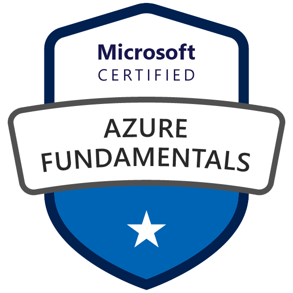
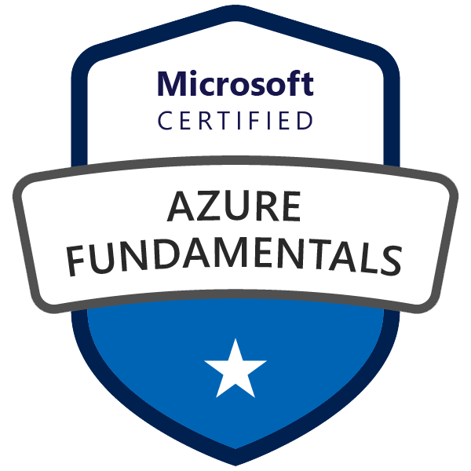

Patrick Sharp
Dedicated IT professional with over 15 years experience supporting clients across a variety of industries. Currently on a deep dive into Cloud technologies.
Dedicated IT professional with over 15 years experience supporting clients across a variety of industries. Currently on a deep dive into Cloud technologies.
- Senior Technician for over 10 years
- Managed datacenter, colocation and network operations
- Provided managed services for clients and resellers
- Administered web hosting and email environments for large userbase
- Designed, built and deployed bare-metal and virtualized solutions
- Set policies and procedures, trained IT staff and maintained technical documentation
- Monitored, analyzed and optimized systems and network to ensure performance
- Provided hardware and software support for PCs, printers, A/V equipment
- Administered Active Directory
- Supported and maintained network
- Provided detailed technical and procedural documentation
- Deployed new hardware/software
- Managed inventory and assets
- Led Wholesale Support team
- Defined policies and procedures for wholesale/reseller support
- Primary technical reference for over 30 independent ISPs
- Addressed advanced networking and technical issues related to DSL and Cable broadband connections
- Network monitoring (Nagios, Cricket)
- Managed wholesale support team to ensure that resellers' technical issues were addressed in a timely fashion
- Trained team members
 

I love to cook and create music. I enjoy exploring new sounds and new flavours (the spices must flow!) I have been playing the guitar for over 20 years and I am an avid electronic musician. My piano skills are... getting better.
I also love to read, especially science fiction and fantasy. My favourite authors are William Gibson, Neal Stephenson and Frank Herbert.
This website was made as part of the Cloud Resume Challenge. It's been a fun and challenging project.
The site was built using serverless storage, functions and databases for AWS, Azure and GCP.